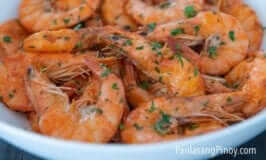

Garlic Butter Shrimp

Garlic Butter Shrimp is a rich and flavorful dish and it is super easy to make.
The use of shrimp with scales and head make this unique from other versions. People who are used to buy frozen shrimp
from the supermarket might find this uncommon. Cooking shrimp in this form is actually a common practice in some Asian
countries, including the Philippines.
Dishes such as Sinignag na Hipon, Halabas na Hipon, and Nilasing na Hipon uses cleaned fresh shrimp with head and shell.
I personally like shrimp in this form because it is tastier. You’ll find most of the flavors concentrated below the
head.
Ingredients
- 2 lbs shrimp (cleaned)
- 2 tablespoons parsley (chopped)
- 1/4 cup butter
- 1 head garlic (crushed)
- 1 cup lemon lime soda
- 1 teaspoon lemon juice
- Salt and ground black pepper to taste
Instructions
- Marinate the shrimp in lemon soda for about 10 minutes
- Melt the butter in a pan
- Add the garlic. Cook in low heat until the color turns light brown
- Put-in the shrimp. Adjust heat to high. Stir-fry until shrimp turns orange.
- Season with ground black pepper, salt, and lemon juice. Stir.
- Add parsley. Cook for 30 seconds.
- Serve hot. Share and Enjoy!
Source: Panlasang Pinoy
Back to Homepage